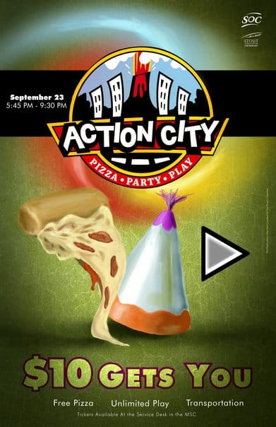

Action City
Poster Design - UW-Stout
Action City Poster
Back in my early days at the University of Wisconsin-Stout, I designed a lot of posters for various events. For this particular project I utilized photoshop, illustrator and a wacom tablet to produce some original artwork pitching an event at Action City. Most of the postered I created and designed for UW-Stout were quick turn around jobs that would be printed on 11x17 paper and then plastered up around campus for a week or so. It was very guerilla warfare design work.


